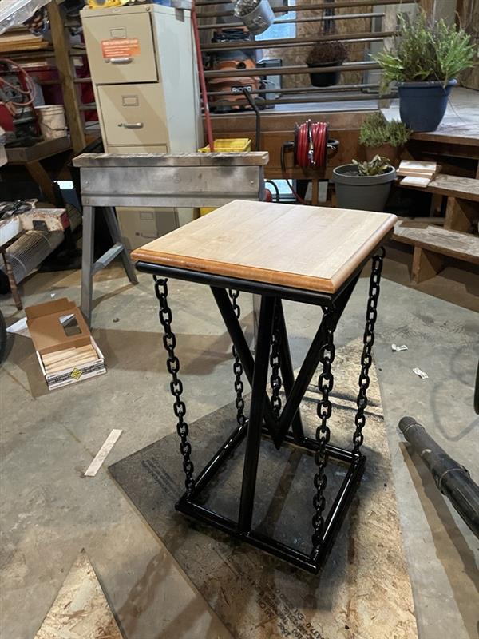

---
There are so many cool projects that I see online and think, "That looks awesome! I kind of want to make one."
This was one of those. The goal of the project was to create a cool-looking bar stool where the seat is
held solely by chains. Right away, you might think, "There's no way to have a chair held up by only chains" and
you'd be right... if you weren't wrong.

The bar stool freshly assembled
Because the black is fairly difficult to differentiate I've marked up the image a bit:
The frame prior to attaching the seat
Pink is the top half; Blue the bottom; Orange are stabilizing chains; Green is the support chain
There were a few parts to making this, the first being the frame. It's made of rusty pipes and chain I found lying around and cleaned up using an angle grinder. The frame is TIG welded together and the bottom of the chain is anchored using the same. The top of the chain is connected using eye hooks to allow for a customizable "wobble" of the seat. After assembling the frame it was spray painted then detailed with a brush. The seat is made from cedar, shaped using a router, sanded and stained to achieve a nice contrast to the solid black frame, and finally connected to the frame with screws.
I was very happy with how it turned out! There was a bit more designing I wish I would've alotted time for, but that's really all I would change.